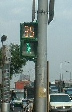
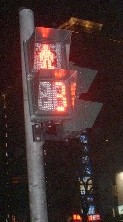
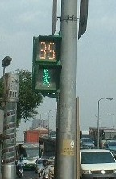
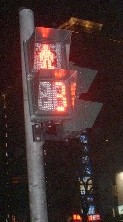

Free talk 雑談 .
（347）台湾話07 歩行者信号機 台湾の歩行者用信号機は、ほとんどが残り秒数が出るタイプ。   アメリカでは こういうタイプの信号機が多いと聞くが、これはじつにいい。目安が何も無いと、ストップしてから１分ほど経ったころ なんとなく足がムズムズしてくる。しかし残り秒数が分かっていれば、残りの５秒や６秒 心やすらかに待てる(^-^； 日本でも、今後は こういうタイプを増やすべきだ。
台湾の歩行者用信号機は、ほとんどが残り秒数が出るタイプ。   アメリカでは こういうタイプの信号機が多いと聞くが、これはじつにいい。目安が何も無いと、ストップしてから１分ほど経ったころ なんとなく足がムズムズしてくる。しかし残り秒数が分かっていれば、残りの５秒や６秒 心やすらかに待てる(^-^； 日本でも、今後は こういうタイプを増やすべきだ。
以前へ 以降へ 目次へ